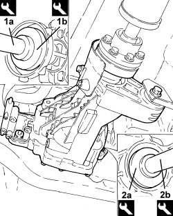

2720C32 OIL SEAL (ONE) LEFT OR RIGHT FOR DIFFERENTIAL UNIT - R.R. AND REPLACE GASKET
- Path
- Procedures > 27 AXLE > 2720 REAR AXLE CASING -SEMISHAFT AND DIFFERENTIAL > 2720C REAR DIFFERENTIAL UNIT > 2720C32 OIL SEAL (ONE) LEFT OR RIGHT FOR DIFFERENTIAL UNIT - R.R. AND REPLACE GASKET
- Kind
- repair procedure (removal / refitting; the operation number is the code)
- Applies to
- engines: 3.2 JTS; all production periods
- Interactive page
- https://sloeber94.github.io/elrnDB-aBrrSpdr/en/#/946002104
Applies to: engines: 3.2 JTS; all production periods
 Removing
Removing
 Refitting
RefittingOp. 4450B13 REAR WHEELS (TWO) - R.R
Op. 2720D10 DRIVESHAFT WITH LEFT OR RIGHT JOINT (ONE) - R.R.
- Remove the left and right oil seals for the rear differential from their seats without damaging them.
Applies to: engines: 3.2 JTS; all production periods
Refitting
Removing1. Fit a new oil seal, right side, using the tools (1a) and (1b).
Tool | Description | Function | Validity |
|---|---|---|---|
2000008500 | Fitting tool | Fitting differential right side oil seal | 3.2 JTS |
Tool | Description | Function | Validity |
|---|---|---|---|
1870007000 | Grip | To be used with fitting tools 2000008500 and 2000008600 | 3.2 JTS |
2. Fit a new oil seal, left side, using the tools (2a) and (2b).
Tool | Description | Function | Validity |
|---|---|---|---|
2000008600 | Fitting tool | Fitting differential left side oil seal | 3.2 JTS |
Tool | Description | Function | Validity |
|---|---|---|---|
1870007000 | Grip | To be used with fitting tools 2000008500 and 2000008600 | 3.2 JTS |

Applies to: engines: 3.2 JTS; all production periods
Op. 2720D10 DRIVESHAFT WITH LEFT OR RIGHT JOINT (ONE) - R.R.